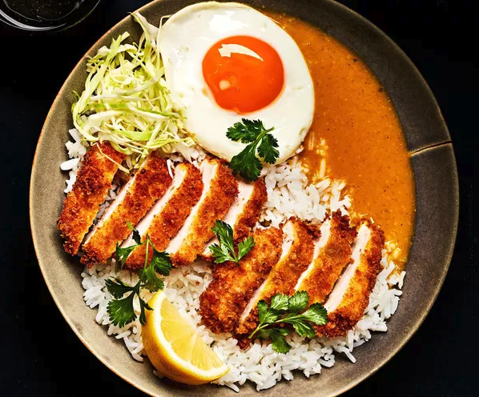

Chicken Katsu

Description
This is the best katsu dish ever. It's easy to make, fun to eat, nearly everyone that has ever had it loves it... it's your turn now.
INGREDIENTS
Yukari Pickled Red Cabbage
- 1/2 head red cabbage, thinly sliced
- 1.5 cups (360g) rice vinegar
- 1 cup (232g) water
- 2 tablespoons (26g) sugar
- 1 tablespoon (10g) salt
- 1 tablespoon (8g) Yukari
Curry
- 1/4 cup of butter (56g) - (first measurement)
- 3 onions, julienned
- 1-quart (907g) chicken stock
- 4 dried shiitake mushroom (6g)
- 1 apple, grated
- 1 tablespoon (15g) tomato paste
- 1/2 cup butter (112g) - (second measurement)
- 1/2 cup (72g) all-purpose flour
- 1 tablespoon (8g) garam masala *optional*
- 1/4 cup (25g) curry powder
- 2 teaspoon (9g) MSG
- 1 tablespoon (14g) dark soy
- 2 tablespoons (23g) Worcestershire sauce
- 1 tablespoon (18g) honey
- 3/2 tablespoon butter (50g) - (third measurement)
Pork Katsu
- 4 boneless pork loin chops
- salt to taste
- 1/2 cup (72g) all-purpose flour
- 2 eggs plus a splash of water
- 1.5 cups (75g) panko breadcrumbs
- 3-4 cups oil for frying
Assembly
- steamed rice
- curry
- katsu
- furikake
- finish with green onion ribbons (1 green onion bunch)
INSTRUCTIONS
Yukari Pickled Red Cabbage
- Thin slice, ½ a head of red cabbage (using a mandoline carefully) and place it in a large container.
- Place the vinegar, water, sugar, and salt in a medium saucepot, bring it to a boil and, pour it over the cabbage. Next, add a closed sandwich bag full of water over the cabbage to make sure the cabbage is submerged in the pickling liquid, and let it sit at room temperature until it cools down completely.
- Remove the weight (sandwich bag) and keep it in the fridge.
Curry
- Add the butter (first measurement) to a large saucepot and set it up over medium-high. Once the butter melts, add the julienne onions and cook the onions for 30 to 45 minutes, adjusting the temperature between medium and low accordingly; if the onions start to stick to the bottom of the pot, add a splash of water to deglaze.
- Bring one-quart chicken stock to a boil and add the shitake mushrooms; after two minutes, remove your mushrooms or until entirely hydrated.
- Peel the apple, and grate it. Next, add it to your onions with the tomato paste, stir it and cook for 3 to 4 minutes or until the apple softened. Remove and place it aside.
- Over medium-high (using the same pot), add the butter (second measurement), once melted, add the flour, constantly stir over 30 seconds; then add the garam masala, curry powder, MSG; whisk it, and let it toast for about one minute, stirring occasionally.
- Add the onions, dark soy, Worcestershire sauce, honey, and one quart of chicken shitake stock, often stirring until thicken and let it simmer for two minutes.
- Blend the mix until smooth, then add the butter (third measurement) while blending, one tablespoon at a time. Pass it through a fine strainer or chinois. Keep it warm.
Pork Katsu
- Cut the meat off the bone, and score the fat cap down, so the meat does not curl while cooking. With a sharp knife, score the meat lightly, on the exposed flesh, in a crosshatch pattern, no more than ⅛ of an inch deep. (This step is optional)
- With a meat mallet, flatten the pork loin portions until they are ½ an inch thick; season them with salt and a pinch of msg. Place it in the fridge for thirty minutes or overnight.
- Set up your breading station by placing the flour, beaten eggs and panko, in separate bowls.
- Toss the meat in the flour, coat it, shake off the excess, dip, coat in the egg wash, let it drain slightly; then press it into the panko, make sure everything is well covered. Repeat with all the chops.
- Fill up a large pot with 2.5 inches of vegetable oil. Heat it to 340F, fry the pork chops, one or two at a time, depending on the size of your pot. Fry for four to six minutes or until golden brown and crisp, and repeat with the rest.
Assembly
- In a bowl (plate), add a portion of white rice, leaving a pocket on the edge of the plate for the curry; in that pocket, pour as much sauce as you want. (Add steam veggies, optional)
- Slice your pork katsu, and add it to your bowl, slightly touching the curry; then add your pickling cabbage. Finally, sprinkle your favorite furikake generously. Garnish with some thinly sliced green onions.